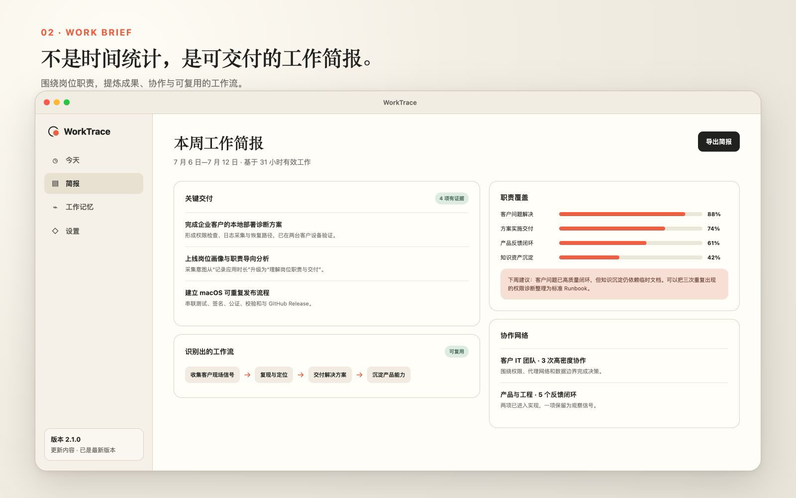

自动工作记忆
把零散的应用切换、窗口、网页和日历信号整理成连续、可回看的工作脉络。
WorkTrace 自动整理电脑活动、日历与线下补充，生成今天的时间线、关键交付和工作简报。不是监控，也不是另一张待办清单。

时间线负责记住发生了什么，简报负责回答这些工作产生了什么价值。你始终可以检查、修正和决定是否导出。
把零散的应用切换、窗口、网页和日历信号整理成连续、可回看的工作脉络。
按关键交付、职责覆盖、识别出的工作流与协作网络，呈现一周真正推进的事情。
工作数据默认留在设备上。采集可暂停，敏感应用可排除，导出由用户主动发起。